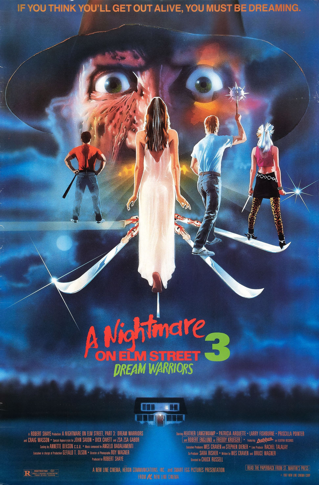

HOME

During a hallucinatory incident, young Kristen Parker (Patricia Arquette) has her wrists slashed by dream-stalking monster Freddy Krueger (Robert Englund). Her mother, mistaking the wounds for a suicide attempt, sends Kristen to a psychiatric ward, where she joins a group of similarly troubled teens. One of the doctors there is Nancy Thompson (Heather Langenkamp), who had battled Freddy some years before. Nancy senses a potential in Kristen to rid the world of Freddy once and for all.
- Company Credits: New Line Cinema, Heron Communications, Smart Egg Pictures,
- Release Date:February 27, 1987 (United States)
- Genres:Fantasy Horror
- Rating:R
- Running time:1h 36m